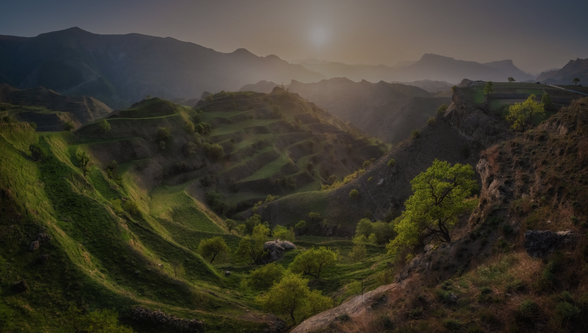
Всё о республике
Дагестан
Знакомимся с культурой и отправляемся к озерам, скалам и селам-призракам!
Дагестан на автодоме: горы, каньоны
и дороги, которые запомнятся навсегда
Дагестан — один из самых недооценённых регионов России для автопутешествий. Здесь нет привычной туристической инфраструктуры, зато есть дикая природа, кавказская культура и дороги, ради которых и покупают автодом
Если вы только начинаете путешествовать — Дагестан может стать ярким, но довольно требовательным направлением. В этой статье рассказываем как подготовиться и что стоит увидеть (и не раз!)
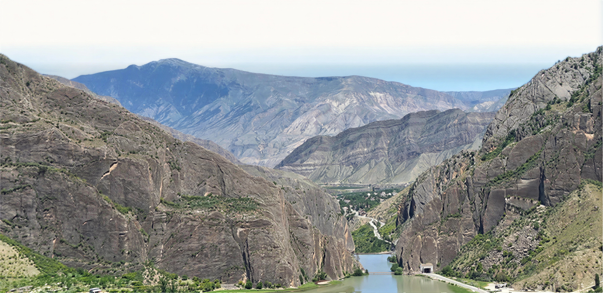
Кухня Дагестана
Местная кухня простая, сытная и основана
на традиционных рецептах.
- Урбеч Паста из перемолотых семян (чаще всего льна или орехов). Её едят с хлебом или используют как добавку
- Хинкал Главное блюдо региона. Это отварное тесто, которое подают с мясом, бульоном и соусами
- Чуду Тонкие лепёшки с начинкой: картофель, сыр, зелень, мясо или тыква. Часто готовятся на сухой сковороде
- Мясные блюда Баранина и говядина — основа рациона, часто готовятся просто, без сложных специй
- Курзе Похожи на пельмени, но с характерной формой и разными начинками
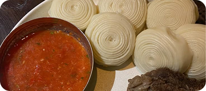
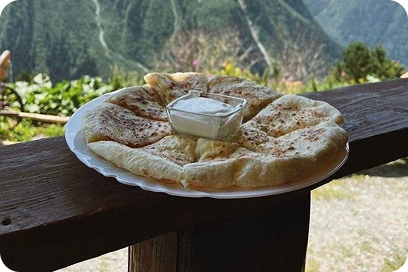
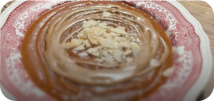
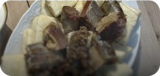
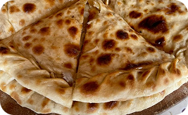
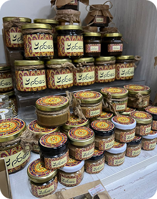
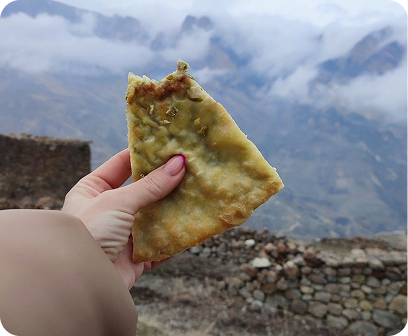
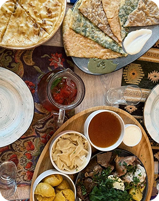
Сулакский каньон
Сулакский каньон — одна из самых известных природных достопримечательностей Дагестана. Он находится примерно в 60–70 км от Махачкалы и считается одним из самых глубоких каньонов Европы
Сулакский каньон — это не просто «одна из точек маршрута». Он даёт представление о масштабе природы Дагестана
Это место, где:
- хорошо видно контраст рельефа региона
- можно оценить высоты и глубины Кавказа
- появляется ощущение пространства, которого не хватает в более туристических местах
Если выбирать одну природную локацию в Дагестане — чаще всего выбирают именно его
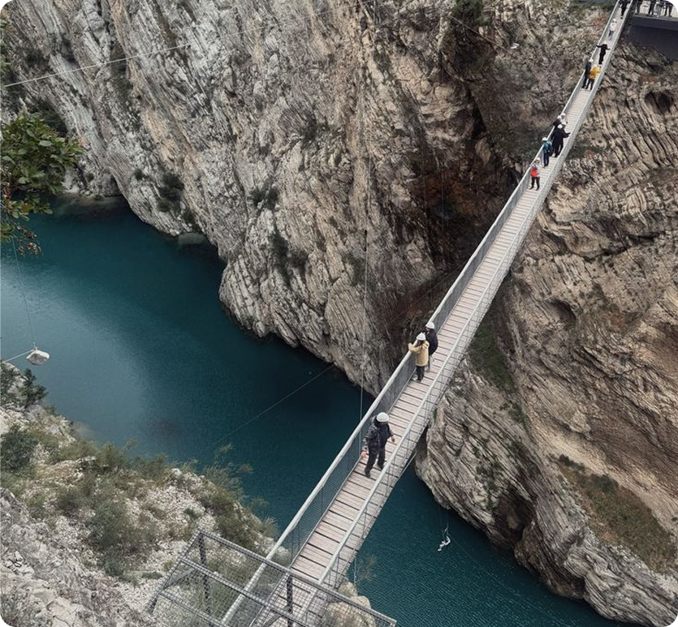
Гуниб
Гуниб — одно из самых известных высокогорных сел Дагестана. Оно расположено на высоте около 1500 метров над уровнем моря, на плато, окружённом крутыми склонами. Это место сочетает природные виды, историческое значение и более спокойную атмосферу по сравнению с другими точками региона
Гуниб — это сочетание трёх вещей:
- истории
- доступных горных пейзажей
- более спокойной атмосферы
Это одно из самых сбалансированных мест — здесь удобно остановиться, отдохнуть и при этом увидеть горный Дагестан без экстремальных условий
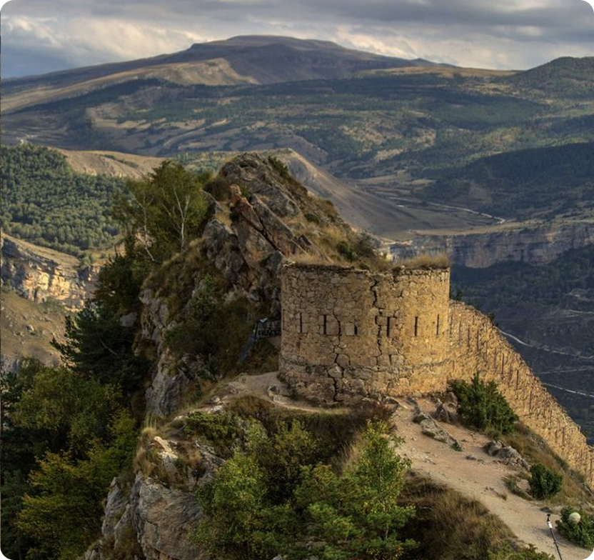
Дербент
Дербент — один из ключевых городов Дагестана и самый древний город России. Его история насчитывает более 2000 лет, а расположение между Каспийским морем и Кавказскими горами сделало его стратегически важной точкой на протяжении веков
Здесь сохранились:
- древние стены, уходящие к морю
- крепость, построенная более 1500 лет назад
- старые кварталы с традиционной планировкой
Для путешественников это одно из самых понятных и удобных мест в республике: здесь есть инфраструктура, исторические объекты и доступ к морю
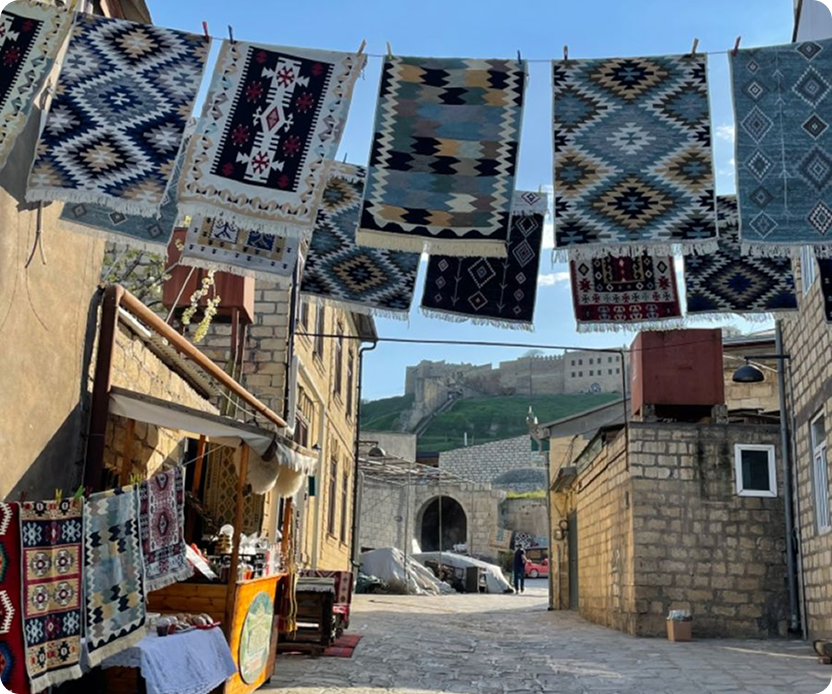
Дагестан — это регион с сильной культурной идентичностью, разнообразной природой и минимальной туристической инфраструктурой
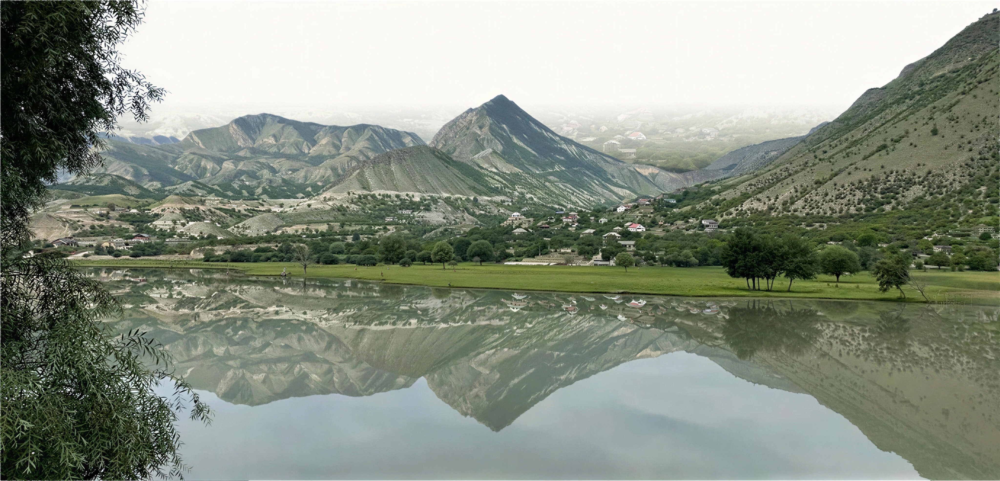